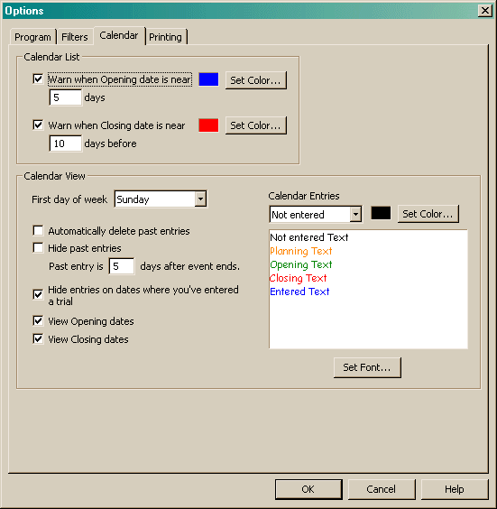

The Calendar options apply to all Calendar entries.

In the Calendar View, you can change which day of the week should appear at the start. I find starting on Monday convenient as it keeps most trials on a single line.
Once a date has passed, the old entry can either be hidden or deleted. In either case, you can configure the program to define how much time should pass before an entry is considered past. Setting this value too low can make it difficult if you wish to create a trial directly from the calendar entry.
The "Hide entries on dates where you've entered a trial" is convenient for hiding trials that you will not be entering. It helps keep the calendar from being too cluttered.
The next option allows you to change the size of the calendar entry. The default size is 100 by 70. For laptops with smaller screens (for instance 1024x768), you may want to change these values like you see above.
You can also change the display for items with opening and closing dates. These dates are displayed in the listed colors (which can be changed here) when you have indicated that you are planning on entering the trial. In addition, the Closing information will be used to display a trial that you have indicated that you have entered.
All View Options are saved into the local Windows Registry.